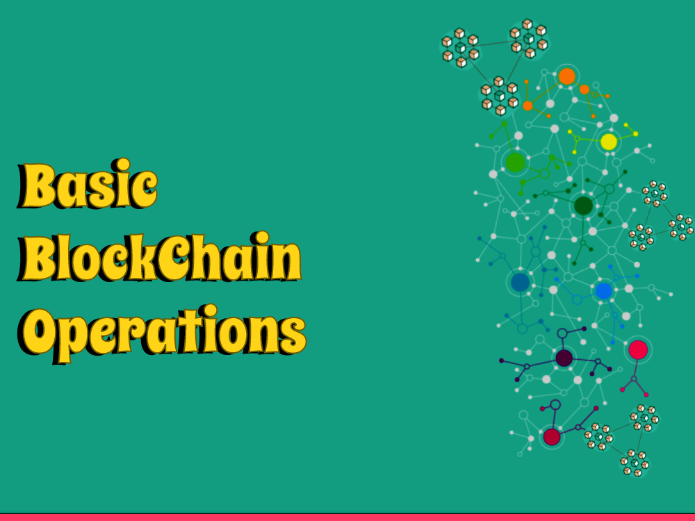

Blockchain is a dispersed record innovation that considers secure and straightforward exchanges between different gatherings without the requirement for mediators. Here are a few fundamental tasks that happen on a blockchain:
Block Creation
A block is made when a gathering of exchanges are confirmed and added to the blockchain by an organization of PCs called hubs. Each block contains an exceptional code, called a hash, that recognizes it and connections it to the past block.
Transactions Verification
Exchanges on a blockchain should be checked by hubs on the organization. This includes guaranteeing that the exchange is substantial, that the shipper has an adequate number of assets, and that the exchange meets some other indicated standards.
Mining
Mining is the most common way of adding new blocks to the blockchain. Hubs on the organization contend to settle complex numerical riddles, and the primary hub to tackle the riddle is compensated with a specific measure of digital currency.
Consensus
Agreement is the interaction by which hubs on the blockchain settle on the legitimacy of new exchanges and blocks. This is generally accomplished through an agreement calculation, like Evidence of Work or Verification of Stake.
Security
Blockchain is a safe innovation that utilizes cryptography to safeguard exchanges and information on the organization. Each block in the chain is scrambled and connected to the past block, making it extremely challenging for anybody to modify the information on the blockchain.
Smart Contracts
Shrewd Agreements are self-executing programs that sudden spike in demand for the blockchain. They can be utilized to computerize the execution of mind boggling exchanges and arrangements between parties, without the requirement for delegates.
Decentralization
Blockchain is a decentralized innovation, implying that it isn't constrained by a solitary substance or association. All things considered, it is kept up with and worked by an organization of hubs on the blockchain. This makes it safer and straightforward than conventional concentrated frameworks.
How about we examine these in subtleties
Block Creation
In a blockchain, a block is an information structure that contains a bunch of exchanges that have been confirmed and added to the blockchain. Block creation is the method involved with adding another block to the blockchain.
Here is a fundamental outline of the course of block creation:
Transactions are communicated to the network
At the point when a client starts an exchange, it is communicated to the hubs in the organization.
Transaction validation
Every hub on the organization approves the exchange to guarantee that the shipper has adequate assets, the exchange is certainly not a copy, and the exchange complies to the guidelines of the blockchain.
Transaction consideration in a block
When an exchange has been approved, it is added to another block.
Block mining
Diggers on the organization contend to tackle a complex numerical issue that requires critical registering power. The primary excavator to tackle the issue communicates the answer for the organization.
Block validation
Different hubs on the organization confirm that the arrangement is right and that the block complies with the standards of the blockchain.
Block expansion to the blockchain
When the block has been approved, it is added to the blockchain and turns out to be essential for the super durable record of exchanges.
Block creation is a significant part of the blockchain, as it guarantees that all exchanges on the organization are legitimate and get. The decentralized idea of the blockchain intends that there is no single element in charge of block creation, making it a trustless and straightforward framework.
Transaction Verification
Check of exchanges is a basic activity in blockchain innovation that guarantees the trustworthiness and credibility of exchanges that happen inside a blockchain network.
At the point when an exchange is started, it is communicated to all hubs inside the organization. These hubs, otherwise called validators, really look at the exchange against a bunch of predefined decides and affirm that the exchange is legitimate.
To affirm the legitimacy of an exchange, validators really look at whether:
1: The exchange has a substantial mark, demonstrating that it was approved by the source.
2: The source has adequate assets to finish the exchange.
3: The exchange has not been recently spent or twofold spent.
4: The exchange meets any extra principles or rules that have been set by the organization.
When an exchange is approved by a larger part of hubs inside the organization, it is added to the blockchain record as another block, which is then recreated across all hubs in the organization.
The confirmation of exchanges is fundamental for the security and unwavering quality of blockchain networks. By guaranteeing that main legitimate exchanges are added to the blockchain, the gamble of misrepresentation, hacking, or other security breaks is fundamentally decreased. It additionally assists with keeping up with the precision of the blockchain record, which is vital for some applications, including digital money exchanges and inventory network the executives.
Mining
Mining is the interaction by which new blocks are added to the blockchain. It includes taking care of perplexing numerical issues that approve exchanges and make new blocks. Diggers are hubs on the organization that contend to be quick to tackle the issue and add another block to the blockchain. When a block is added, it can't be changed or erased, making the blockchain a protected and sealed record of exchanges.
Here are the fundamental advances engaged with blockchain mining:
Transaction verification
Excavators confirm exchanges by making sure that they meet specific rules and are not fake.
Block creation
When a gathering of exchanges has been checked, excavators assemble them into a block and add a header that incorporates a one of a kind identifier, a timestamp, and a reference to the past block in the chain.
Solving the cryptographic puzzle
Diggers contend to settle a cryptographic riddle that is remembered for the header of the block. The primary excavator to address the riddle adds the block to the blockchain and is compensated with recently made digital currency, like Bitcoin.
Propagation of the block
When an excavator has effectively tackled the cryptographic riddle and added another block to the blockchain, they broadcast the new block to the organization so different hubs can check and add it to their duplicates of the blockchain.
Consensus
The new block is added to the blockchain solely after different hubs on the organization have checked that it is legitimate and meets the agreement rules of the organization. When the block is added to the blockchain, it turns into an extremely durable piece of the record and can't be modified or erased.
Overall, mining is a basic part of the blockchain that guarantees the security and honesty of the record. By boosting diggers to contend to approve exchanges and add new blocks to the blockchain, the framework stays decentralized and trustless.
Consensus
With regards to blockchain innovation, agreement alludes to the interaction by which an organization of hubs (PCs) come to a settlement on the condition of the blockchain. This is a basic activity since it guarantees that all hubs in the organization have a similar duplicate of the blockchain and that all exchanges are checked and approved. Without agreement, the blockchain would be helpless against twofold spending assaults and other security issues.
There are a few different agreement calculations that can be utilized in blockchain innovation. Probably the most well-known ones include:
Proof of Work (PoW)
This is the first agreement calculation utilized in Bitcoin and numerous other cryptographic forms of money. In PoW, hubs contend to take care of perplexing numerical issues to add new blocks to the blockchain. The primary hub to tackle the issue and add the block is compensated with brand new digital money. While PoW is secure, it is likewise very energy-concentrated and can be slow.
Proof of Stake (PoS)
This is a more up to date agreement calculation that is utilized in numerous fresher blockchain projects. In PoS, hubs are chosen to approve exchanges and make new blocks in view of how much cryptographic money they hold. This implies that hubs with more digital currency have more impact in the organization. PoS is by and large viewed as quicker and more energy-productive than PoW.
Delegated Verification of Stake (DPoS)
This is a variation of PoS that is utilized in some blockchain projects, including EOS and BitShares. In DPoS, hubs (called "delegates") are chosen by the local area to approve exchanges and make new blocks. The representatives are picked in light of how much digital currency they hold and their standing inside the local area.
Byzantine Adaptation to non-critical failure (BFT)
This is an agreement calculation that is utilized in some blockchain projects, including Hyperledger Texture. In BFT, hubs speak with one another to settle on the condition of the blockchain. The calculation is intended to be strong to pernicious entertainers and can keep on working regardless of whether a few hubs come up short or act malignantly.
There are numerous other agreement calculations being used or being developed, and each has its own assets and shortcomings. The decision of agreement calculation relies upon the particular requirements of the blockchain project being referred to.
Security
Blockchain innovation is intended to be secure by using cryptographic procedures to guarantee the honesty and changelessness of information put away on the blockchain. Here are some key security contemplations for blockchain activities:
Decentralization
The decentralized idea of blockchain networks makes them safer than concentrated frameworks. In a decentralized organization, there is no weak link or control, which makes it challenging for an aggressor to think twice about framework.
Consensus mechanisms
Blockchain networks use agreement components, like verification of-work or confirmation of-stake, to approve exchanges and guarantee the honesty of the blockchain. These components expect members to take care of complicated numerical issues or stake their own digital money to approve exchanges and add blocks to the chain.
Encryption
Blockchain networks use encryption methods, like public-key cryptography, to get exchanges and safeguard the protection of clients. Every client has a public and confidential key pair, which is utilized to sign and check exchanges.
Immutability
The permanence of blockchain information guarantees that once an exchange has been recorded on the blockchain, it can't be changed or erased. This makes it hard for aggressors to alter or erase information on the blockchain.
Smart contracts
Brilliant agreements are self-executing contracts with the conditions of the understanding among purchaser and dealer being straightforwardly composed into lines of code. Savvy contracts are intended to computerize the execution of agreements, which can increment proficiency and lessen the gamble of extortion.
Private and permissioned blockchains
Private and permissioned blockchains limit admittance to the organization to approved members, which can build security and protection. This can be valuable in big business settings where delicate information should be safeguarded.
It's quite significant that while blockchain innovation can be exceptionally secure, it's not resistant to assault. It's vital to guarantee that appropriate security conventions are set up, including the utilization of solid encryption, standard programming updates, and best practices for key administration. Furthermore, it's essential to guarantee that the organization has a vigorous administration structure and to stay cautious against possible assaults.
Smart Contracts
Savvy contracts are self-executing contracts with the particulars of the understanding among purchaser and vender being straightforwardly composed into lines of code. Brilliant agreements are put away on a blockchain network and are naturally executed when the foreordained circumstances are met.
In blockchain innovation, brilliant agreements are a basic piece of the Ethereum organization and other blockchain stages. The thought behind brilliant agreements is to make trust and straightforwardness in exchanges between at least two gatherings, without the requirement for a delegate like a bank or a legal counselor.
Savvy contracts work on the guideline of "in the event that" explanations. For instance, on the off chance that a specific condition is met, a specific activity will be executed. Brilliant agreements can be utilized for many applications, including protection claims, inventory network the executives, and casting a ballot frameworks.
Brilliant agreements are regularly coded utilizing Strength, a programming language planned explicitly for Ethereum. When a shrewd agreement is sent on the Ethereum organization, it is openly noticeable and can't be changed, making it a protected and carefully designed approach to executing arrangements.
In synopsis, brilliant agreements are a significant element of blockchain innovation that considers the robotization and execution of arrangements without the requirement for delegates. They work on the guideline of "in the event that" proclamations and are coded utilizing programming dialects like Robustness. Shrewd agreements can be utilized for different applications, making them an integral asset for organizations and people the same.
Decentralization
Decentralization is a critical idea in blockchain innovation. It alludes to the dissemination of control and dynamic power across an organization of PCs or hubs, as opposed to being unified in a solitary power. In a decentralized blockchain network, no single substance has full oversight over the framework, and every member can go about as both a client and a validator of exchanges.
In a decentralized blockchain network, exchanges are approved by different hubs rather than a solitary substance. This intends that there is no main issue of disappointment, and the framework is safer and versatile to assaults. Also, the decentralized idea of blockchain networks makes them more straightforward, as anybody can see the whole exchange history of the organization.
Decentralization is accomplished through an agreement component that permits hubs to settle on the condition of the blockchain. In most blockchain networks, this agreement system is accomplished through a cycle called mining, where hubs contend to take care of a complex numerical issue to approve exchanges and add another block to the blockchain. The main hub to tackle the issue is compensated with brand new digital money as a motivator for their work.
Generally speaking, decentralization is a crucial trait of blockchain innovation that considers more prominent security, straightforwardness, and versatility in the organization. It has numerous expected applications past digital money, remembering for inventory network the executives, casting a ballot frameworks, and that's only the tip of the iceberg.
You've taken in the nuts and bolts of blockchain tasks, from making a block to accomplishing agreement. I trust this post has been as edifying and energizing for you as it was for me to compose it. As we wrap up, I can't resist the urge to ponder the boundless potential outcomes that blockchain innovation offers that would be useful, from reforming money to changing the manner in which we store and offer data. It's an interesting opportunity to be a tech fan, and I'm excited to be on this excursion with every one of you. Continue investigating, continue learning, or more all, continue to grin the blockchain world is yours to win!
Thank you for reading, and stay tuned for more exciting insights into the world of blockchain and cryptocurrencies!